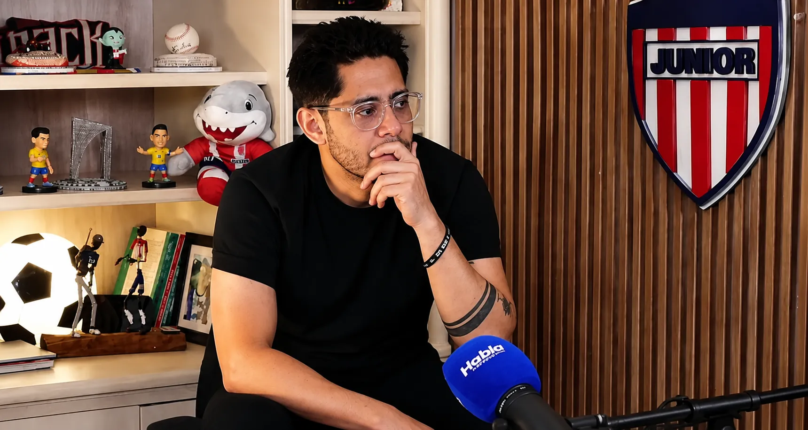
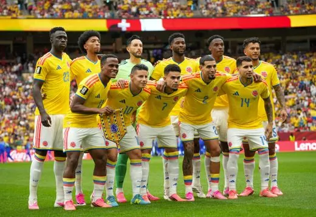

Liga BetPlay · Fecha 19Próximo
PASPasto
10:00p. m.
Mié 11 nov · faltan 3 días
 Junior
Junior17.ºen la tabla
16puntos
9puntos del 8.º

Último programaLiga BetPlay · Fecha 19Próximo
Mié 11 nov · faltan 3 días
JuniorMiércoles 11 de noviembre
Fuente: Datafactory · foto del 7 nov 2026. Sin estadio ni canal por partido.
| # | Equipo | PJ | DG | Pts |
|---|---|---|---|---|
| 1 | 17 | +19 | 36 | |
| 2 | 17 | +19 | 35 | |
| 3 | Deportivo Cali | 17 | +16 | 33 |
| 4 | Bucaramanga | 17 | +9 | 29 |
| 5 | 18 | +3 | 29 | |
| 6 | Santa Fe | 17 | +5 | 28 |
| 7 | 17 | +10 | 27 | |
| 8 | Águilas Doradas | 17 | +2 | 25 |
| Puestos 9.º al 16.º: sin datos en la maqueta | ||||
| 17 | 17 | −4 | 16 | |
Fuente: Datafactory · foto del 7 nov 2026. Los 8 primeros clasifican.

Previa · Pasto vs. Junior

Selección Colombia

Liga BetPlay

La frase del día

Así se vivió el gol

El once en 30 segundos

El plantel, de cerca

Qué falló en Lima